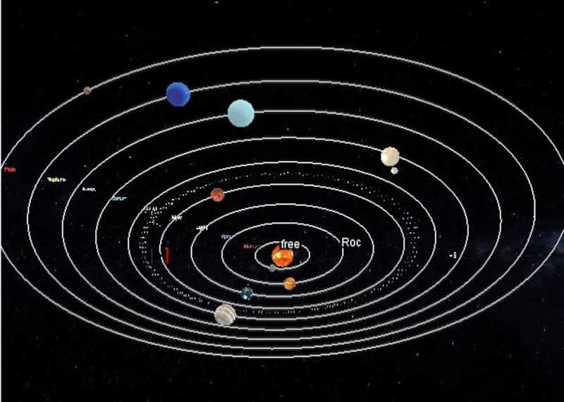

Solar System
In the "Solar System" project, I utilized Java3D to create a captivating simulation of planets, meteors, and a rocket. Users have the option to observe the entire solar system from an aerial perspective or take control of the rocket and explore the system from a dynamic viewpoint. It's an immersive experience that allows users to navigate through space and learn more about our celestial neighbors.
I have created the Solar System using Java3D with planets, meteors, and a rocket. The user can choose to view the whole solar system from above or the view of the rocket, which can be controlled to fly around the solar system. For this project, I created the rocket and attached the view of the player to the rocket so that when the rocket moves around the solar system, the view goes with it. \ Also when the rocket fly and hit the meteos there will be a crashing sound.